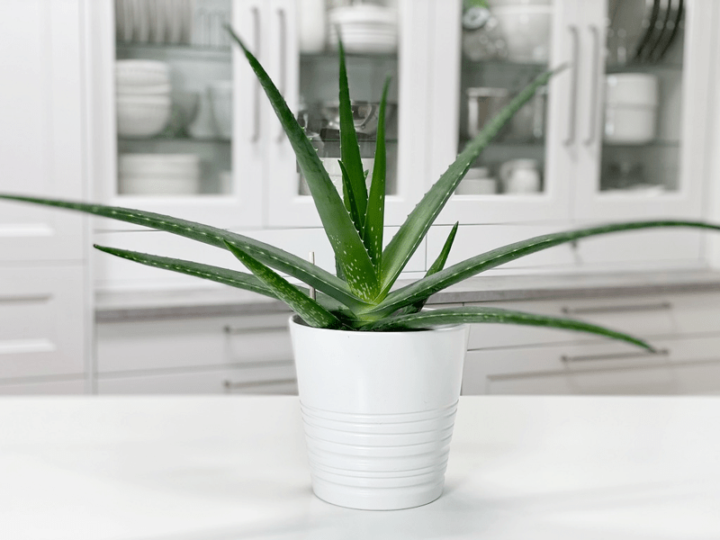
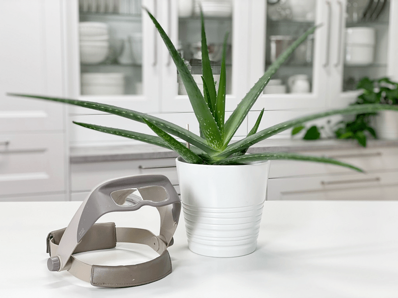

Aloe Vera Plant | Medicinal | Care Difficulty – Easy
I don’t recall my mom being a huge indoor plant lover while I was growing up, but I know we had a few tucked here and there. However, I do recall when I was in third grade; I came across the mother lode of aloe vera plants. Next door to the apartment building we lived in was a little white house. An elderly lady lived there alone. During the summertime, she would have an ongoing garage sale that drew me in daily. I didn’t have a need for anything–a nine-year-old doesn’t have a calling for doilies and old bathroom rug sets–but there was one item that I fell in love with.

Aloe vera plants! She must have had 50 small starter plants that she was selling for 25 cents each. I didn’t know a thing about them or why a person would want one of those alien-looking plants, but the price was right, and Mom needed a surprise! So, I bought a couple of them for her. She received them with motherly excitement, which made me want to buy her more of them!
So, every day that summer, I would dig in the deep corners of her purse for any change that she might have had. Soon, Mom ran out of coins, unbeknownst to her, so I reverted to looking in her old purses in the closet, I turned up couch cushions, I scoured the floor in the community laundry room… pennies, nickels, dimes… I didn’t care what form it came in; it all added up. I have no idea how many plants I bought that summer for my mom, but I should have been awarded “the frequent shopper” award for sure.
 A little over a decade later, I brought home MY first aloe plant. It was a thing of beauty, and I was so excited to try my hand at growing indoor houseplants. The next day, I woke up to something that used to resemble an aloe plant… my cat ate almost the whole thing!
A little over a decade later, I brought home MY first aloe plant. It was a thing of beauty, and I was so excited to try my hand at growing indoor houseplants. The next day, I woke up to something that used to resemble an aloe plant… my cat ate almost the whole thing!
Skip a few decades, and here I am again, attempting to grow yet another aloe plant (no cats this time). I bought it with dreams of creating raw, vegan recipes with it, but in reality, I can’t bring myself to cut the darn plant. So, here it sits, growing and looking ever so enchanting.
There are over 400 different species of aloes across the world. They have many medicinal and commercial uses. In fact, it is one of the most useful plants in the whole world. Aloe vera has at least six natural antiseptics and about a hundred more uses. Its antiseptic characteristics are known to be effective in destroying mold and bacteria.
One of the most popular uses of this plant comes from its leaf juice. The juice can miraculously relieve pain caused by scrapes and burns. This plant not only holds amazing appeal to people but also to animals. Interestingly enough, hummingbirds love the nectar from aloe flowers.
Water Requirements
It’s important not to overwater them–like any plant, really. In the warmer months, you can soak the plant with water. Just make sure you allow the soil to dry out almost completely before watering it again. In the colder months, the plant will require less watering because it will take longer for the soil to dry. I water mine roughly 1-2 times a month in the summer, less in the winter. Remember, those fleshy leaves and roots are full of water, and they can quickly rot out.
Light Requirements
Indoors, they require as much light as possible. If the plant is not getting the light it needs, the leaves will droop downward. Just be sure to keep it away from hot glass (like a western exposure) because it will burn. It can be near that window but not in it. It’s a good idea to rotate the plant with each watering to ensure that all sides of the plant receive an equal amount of sunlight. My aloe plant has been living on the counter in front of a west-facing window. It’s the best place I have for it at the moment, and so far it seems happy. It’s been growing like crazy… though I have a feeling it does need some more light. I will work on that.
Temperature Requirements
Aloe vera plants do best in temperatures between 55 and 80 degrees (F).
Fertilizer – Plant Food
Like most succulents, they don’t really require much in the line of fertilizer. When I got mine, I top-dressed it with a 1″ layer of worm castings and left it at that.
Additional Care
- Remove any dead, discolored, damaged, or diseased leaves and stems as they occur with clean, sharp scissors.
- Lower leaf loss is common as your plant acclimates to its new home. Simply cut the lower leaves down at the base of the plant.
- When the aloe vera plant has made its offsets, plantlets, or babies, this is your chance to grow more of them. Welcome to aloe-grandparenthood.
- As this plant grows, the leaves get big and full of gel, and it gets quite heavy. You’ll need a substantial plant pot to handle the weight, so it doesn’t tip over.
Plant Characteristics to Watch For
Diagnosing what is going wrong with your plant is going to take a little detective work, but even more patience! First of all, don’t panic and don’t throw out a plant prematurely. Take a few deep breaths and work down the list of possible issues. Below, I am going to share some typical symptoms that can arise. When I start to spot troubling signs on a plant, I take the plant into a room with good lighting, pull out my magnifiers, and begin by thoroughly inspecting the plant.

The leaves on my plant are growing horizontally.
- If the aloe vera leaves are growing horizontally and flat instead of upward, it may be a sign that it is not receiving enough sunlight.
- Solution: Relocate the plant, so it receives more indirect sunlight.
The leaves are starting to turn brown.
- If it develops a brown color, it means that it is exposed to too much direct sunlight.
- Solution: Relocate the plant or put a sheer curtain over the window to diffuse the light.
The leaves are thin and curling.
- When the leaves become thin and curly, the aloe plant is not receiving the right amount of water. Curling leaves mean that it is already using its own water to survive.
- Solution: Time to buckle down on your watering habits. Saturate the soil when watering, allowing the excess water to drain from the drain holes. Refer to watering requirements above and adjust accordingly.
Common Bugs to Watch For
If you want to have healthy houseplants, you MUST inspect them regularly. Every time I water a plant, I give it a quick look-over. Bugs/insects feeding on your plants reduces the plant sap and redirects nutrients from leaves. Some chew on the leaves, leaving holes in the leaves. Also watch for wilting or yellowing, distorted, or speckled leaves. They can quickly get out of hand and spread to your other plants.
-

-
Mealybugs
-

-
Scales
-

-
Spider mites
IF you see ONE bug, trust me, there are more. So, take action right away. Some are brave enough to show their “faces” by hanging out on stems in plain sight. Others tend to hide out in the darnedest of places, like the crotch of a plant or in a leaf that has yet to unfurl.
- Mealybugs look like small balls of cotton. They can travel slowly, but they have a strong will and determination! Though its slow movement, if any plant is touching another, there is a chance the mealybug will hitch a ride on a new leaf and spread. They breed like rabbits of the insect world. Females can deposit around 600 eggs in loose cottony masses, often on the underside of leaves or along stems.
- Scales are dark-colored bumps that are primarily immobile insects that stick themselves to stems and leaves. They are rather inconspicuous and don’t look like a typical insect. They can range in color but are most often brownish in appearance. They’re called “scales” primarily due to their scale-like appearance on a plant, due to waxy or armored coverings. They are often seen in clumps along a stem, sucking away at the plant’s juices with their spiky mouthpart.
- Spider mites are more common on houseplants. They are not insects; they are related to spiders. These appear to be tiny black or red moving dots. Spider mites are nearly invisible to the naked eye. You often need a magnifying lens to spot them, or you may just notice a reddish film across the bottom of the leaves, some webbing, or even some leaf damage, which usually results in reddish-brown spots on the leaf.
How to Harvest Your Aloe Plant for Gel and Juice:
- When cutting an aloe leaf, it’s best to remove an entire leaf to keep your plant looking good. Simply cut the leaf as close as possible to the main stem. It’s always better to harvest leaves from the bottom of the plant first. These are the older leaves and will be thicker. Cut leaves retain scars, so if you snip a tip of a leaf, you’ll wind up with a brown-tipped leaf.
- After cutting the leaf, hold it over a small bowl to let the yellowish latex drip out. This is part of the plant that you don’t want to use (latex). At this point, you can rub the cut leaf end on a burn or cut and receive healing relief.
- To harvest all of the internal aloe vera gel for use in face masks, hydrating lotion, sunburn relief or smoothies, lay the leaf on a cutting board and slice off both spiny edges.
- Remove the upper leaf surface with your knife by inserting the knife blade a few millimeters beneath the leaf skin and run it along the length of the leaf.
- Place the lower leaf surface on the cutting board, and run your knife blade along the leaf bottom (beneath the thick gel). As you cut, the gel will come away from the leaf.
How to Use Aloe Gel
- You can apply fresh aloe gel directly to your skin or add it to food, smoothies, and drinks.
- To make aloe juice, use 1 cup of liquid for every two tablespoons of aloe gel. Include any other ingredients, like fruit, and use a blender or food processor to mix up your drink.
- If you’re planning to consume the fresh slices of aloe gel, keep in the refrigerator for up to a few days, but its best to consume it as quickly as possible. You can always store aloe vera gel in the freezer if you’re not ready to use it right away.
© AmieSue.com